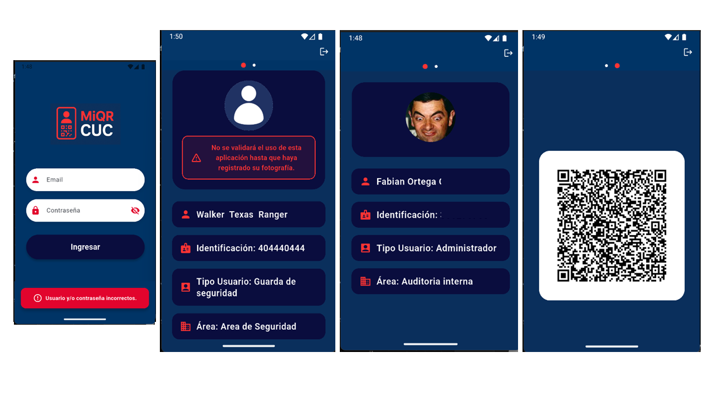
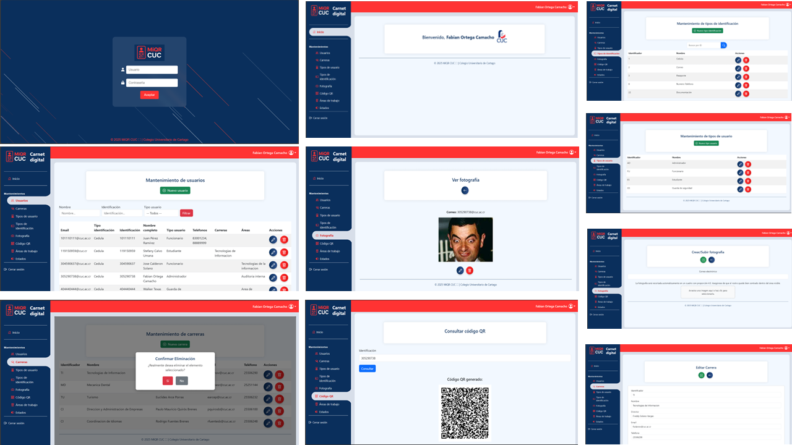
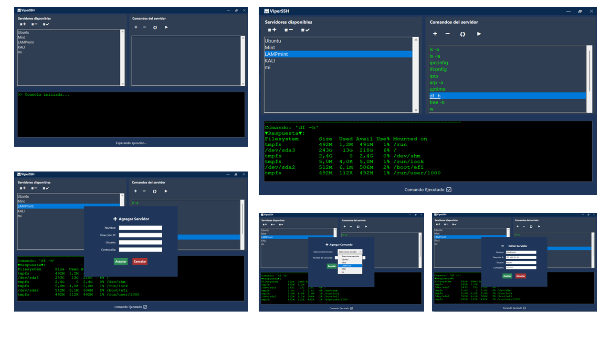

Carnet Digital - Sitio Web Administrativo
Reseña
Este sitio web administrativo del proyecto Carnet Digital permite gestionar 8 microservicios, tales como usuarios, estados, tipos de usuario, carreras, áreas, fotografía y validación QR.
Tecnologías
C#, .Net Core 8, Razor Pages, Bootstrap, CSS, Microservicios, Web Service REST, Postman, JWT, SQL Server, JavaScript


×